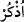

“Allah düşmanları, ateşe sürülmek üzere toplandıkları gün”; yani hep birlikte ateşe;
hesap durağına sürülecekleri gün...
Haşr, ‘bir topluluğu bulundukları yerden çıkarıp savaş vb. bir şeye zorlamak’ demektir
ve ancak topluluklar için kullanılır.
“hepsi bir araya getirilirler.” (
) vezninde olup (
) ‘bir araya getirdim’
anlamındadır ki buna göre “hepsi toplansın diye, sonrakiler gelinceye kadar öncekiler
hapsedilecek” demektir. Bu, durum ateşte yanıp kavrulacakların çokluğundan kinâyedir.
Burada, hepsi bir araya gelsin, diye öncekileri bekletmenin de bir tür azap olduğuna
dâir bir işâret vardır.
/gün kelimesi gizli bir
emir fiili tarafından nasp edilmiştir. Mânâ şöyledir: Ey
Muhammed! Kavmine Allah’ın Âd, Semûd gibi sözü edilen düşmanlarının haşr
edilecekleri günü hatırlat. Ancak, “De ki: İnanın hem öncekiler hem de sonrakiler, o
mâlum günün belirlenmiş vaktinde bir araya getirilecekler!” (el-Vâkıa 56/49-50)
âyetlerindeki gibi ‘gelmiş geçmiş bütün Allah düşmanlarının ateşe girmek üzere
toplanacaklarını anlatmak istemiyor; çünkü “kendilerinden önce gelmiş geçmiş bütün
insan ve cin toplulukları ile birlikte” ifâdesi aşağıda gelecektir.
Ateşi ‘hesap durağı’ olarak tefsir ettik, çünkü aşağıda gelecek şâhidlik, soru-cevap
faslından ve ateşe sürüldükten sonra değil, bu durakta gerçekleşecektir. Hesap
durağından ateş olarak söz edilmesi, ya haşr edilmelerinin ateşe girmekle
sonuçlanacağını ve oraya girmek üzere olduklarını bildirmek için ya da ateşin hemen
kenarında hesâba çekilecekleri içindir.
Âyette, Allah’ın emirlerini tutmayıp yasaklarından kaçınmayan ve elçisinin (s.a.)
izinden gitmeyen birinin, Allah’a îman edip O’nun vahdâniyyetini ikrâr etmiş olsa bile
Allah düşmanı olduğuna, Allah’ın dostunun: O’na ve bütün elçilerine îman edip
Peygamberinin izinden giderek Allah’ın emirlerini tutan kimseler olduğuna işaret
edilmektedir. Allah düşmanları O’ndan o yakıcı uzaklık ateşine girmek üzere haşr
edilecekleri gibi, Allah dostları da Allah’a ve O’nun cennetine girmek üzere haşr
edileceklerdir.
Bunlara ‘Allah düşmanı’ denmesinin sebebi, hem bu kavimleri kötülemek; hem de söz
konusu azap çeşitlerinin başlarına niçin geldiğini bildirmektir.
20. Nihâyet oraya geldikleri zaman kulakları, gözleri ve derileri, işledikleri şeye
karşı onların aleyhine şâhidlik edecektir.